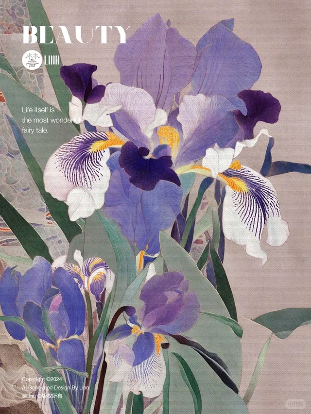
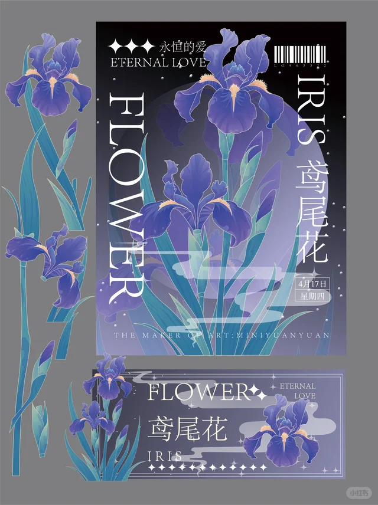

整片宇宙
微博置顶“身后已经有了整片宇宙 / Hello universe”是高可信入口，粉丝“宇航员”语境让星云概念不突兀。
Concept Warm-up 02 / Research Visual
第二条概念预热素材调研视觉版：把肖宇梁、酒酒、宇航员、整片宇宙与反射星云之间的关系，整理成可直接进入创意会的证据与叙事。
Research Thesis
调研显示，肖宇梁与粉丝之间本就长期共享“宇宙、宇航员、月亮、快乐、陪伴”的语义。NGC7023 需要做的是把这些素材组织成更高级的视觉坐标。
微博置顶“身后已经有了整片宇宙 / Hello universe”是高可信入口，粉丝“宇航员”语境让星云概念不突兀。
NGC7023 的蓝色来自尘埃反射星光。肖宇梁也在角色、镜头、粉丝与生活关系中被看见。
酒酒把宇宙概念带回家：忙碌间隙的放慢节奏、简单日子的滋味、可触摸的陪伴。

Emotional Anchor
黑场提供未知、凝视与观测感；白场提供家、毛发、饭碗和靠近。两个场景不必写成反差人格，可以写成同一片星云的不同光谱。
Evidence Wall
优先选择官方账号、公开访谈、低争议粉丝共识和天文事实。争议、旧疾、CP 与角色代餐只作内部理解，不进入品牌口径。

蓝色来自尘埃反射星光。适合转译成“不是猛烈自燃，而是在关系中被照亮”。

“回家、放慢、简单日子”是高共鸣低风险的情绪锚点，可做“酒酒的轨道”。

鸢尾花负责诗性和蓝紫色彩，虹膜负责凝视，星云负责未知与宇宙坐标。

光门、投影、扫描线和档案编号，能把粉丝共同记忆包装成主题观测。
Concept Bridge
第二条预热不需要证明“他适合星云”，而要让粉丝感到：这个概念本来就在他与大家的共同记忆里。
微博置顶与粉丝“宇航员”语境，构成主题的第一层事实基础。星云不是新造词，而是长期关系的命名。
公开访谈中的清醒、人剧分离、自在坦荡，可以对应“在不同关系里显现不同光谱”。
Iris 兼有花与眼睛。镜头凝视、眼部局部、星云倒影，能成为第二条的视觉入口。
酒酒让遥远星云落到生活现场：陪吃饭、靠近、放慢、家居暖白，承担情绪降落点。
Material Matrix
这里可以直接作为创意会的素材清单。风险高的内容不建议进入正式物料，最多保留为内部理解。
粉丝陪伴从身后成为宇宙。
开篇、标题、收束句、星图视觉。
低肖宇梁与粉丝之间最干净的双向表达。
章节标题、评论互动、留言星图。
低忙碌之后回家，陪伴让人慢下来。
“酒酒的轨道”短片、白场情绪落点。
低清醒、真实、角色与本人边界明确。
连接反射星云，不做角色代餐。
中低能解释粉丝保护欲，但商业表达风险高。
仅内部参考，不进入公开预热。
高Publishing Structure
这条路径兼顾概念高级感和粉丝信服度：先讲星云科学，再讲肖宇梁的“被看见”，最后落到酒酒与陪伴。
NGC7023 是反射星云，光抵达尘埃，蓝色显影。
他被角色、镜头、舞台看见，也一直保有做自己的清醒。
整片宇宙、宇航员、有你们好快乐，变成粉丝共享星图。
从黑场观测切到白场家居，星云从遥远变成可触摸。
黑场与白场共同构成肖宇梁这一季的 NGC7023 光谱。
Risk Control
第二条预热的安全边界很清楚：用官方表达与共同记忆打动粉丝，避开会激化争议的粉圈敏感点。
Recommended Key Visual Copy
用 NGC7023 做主题名，用反射星云做概念逻辑，用酒酒做情感降落点。第二条预热可以从天文观测出发，最后抵达一个人、一只小狗和一群持续回应他的观测者。
